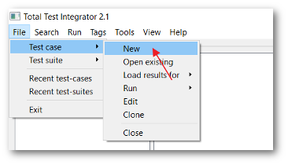
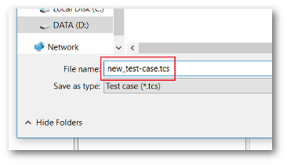
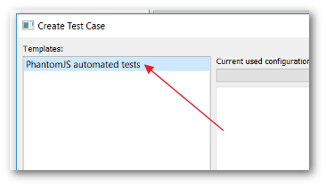
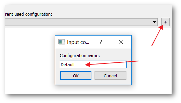
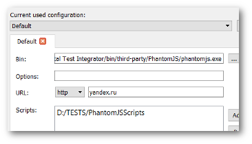
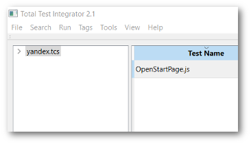

1. Кликните на пункте меню File->Test case->New. В появившемся диалоговом окне введите местоположение и имя файла в котором будут хранится параметры тест кейса. В заключение нажмите кнопку "Save". (Как показано на Рис.1 и Рис.2).
|  |  |
| Рис.1 | Рис.2 |
На экране появится диалог выбора типа тест-кейса и ввода соответствующих параметров. Перечень типов доступных тест-кейсов зависит от набора установленных библиотек. Выберите для примера тип "PhantomJS automated tests" и создайте конфигурацию с именем "Default". Заполните поля формы и нажмите "Ok". (Как показано на Рис.3, Рис.4 и Рис.5).
|  |  |  |
| Рис.3 | Рис.4 | Рис.5 |
Набор поддерживаемых тест-кейсов может быть расширен о чем подробно написано в разделе "Интерфейс библиотеки сопряжения с тестами."
Для каждого тест-кейса можно задать несколько конфигураций, для того, чтобы его можно было использовать в различных вариантах окружения. Например, запускать тесты на сервере или более мощном оборудовании, а просматривать результаты на десктопе или ноутбуке.
Параметры тест-кейса разделяются на два типа. Обязательные параметры для любого тест-кейса и специальные параметры определяемые библиотекой сопряжения с тестами.
К обязательным параметрам относятся:
После того как параметры введены нажмите на кнопку "Ok". Диалог будет закрыт, а созданный тест кейс загружен в главное окно программы (Рис.6).
|  |
| Рис.6 |